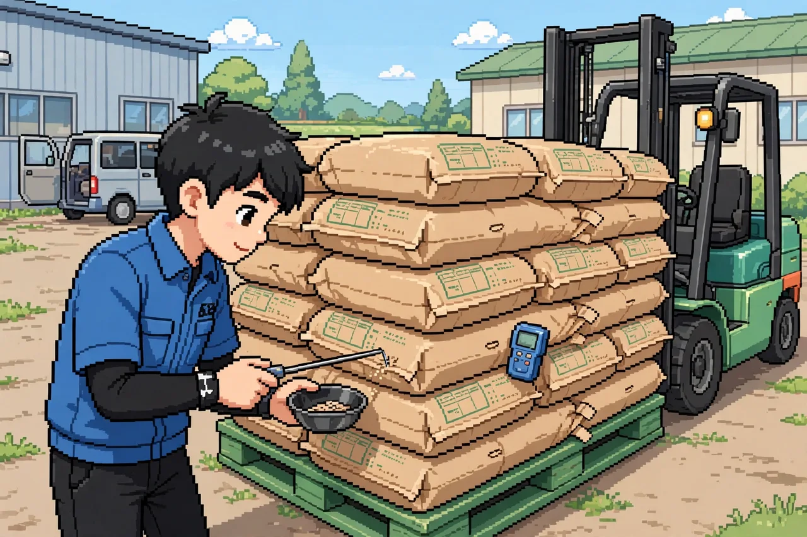
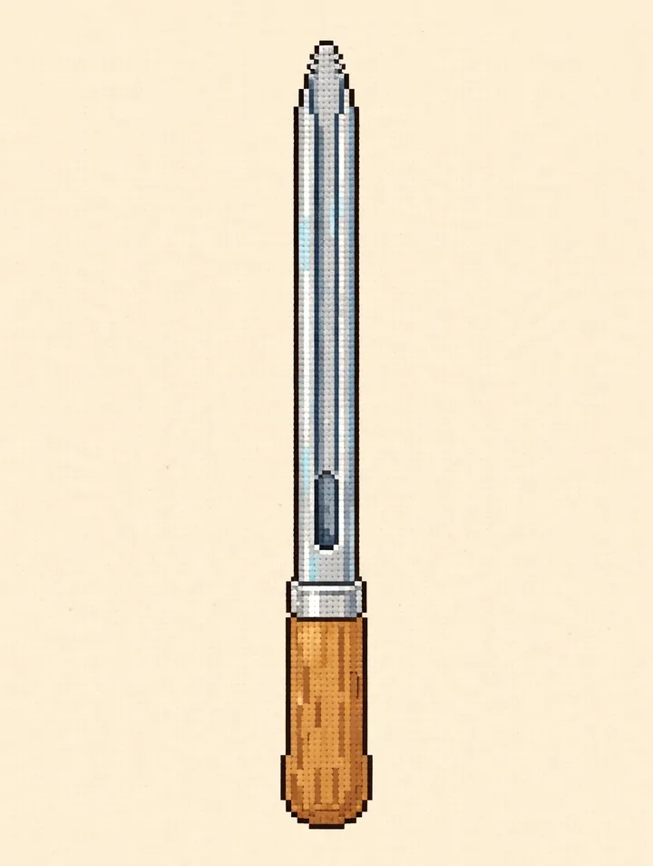
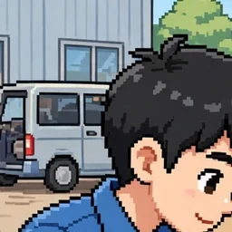
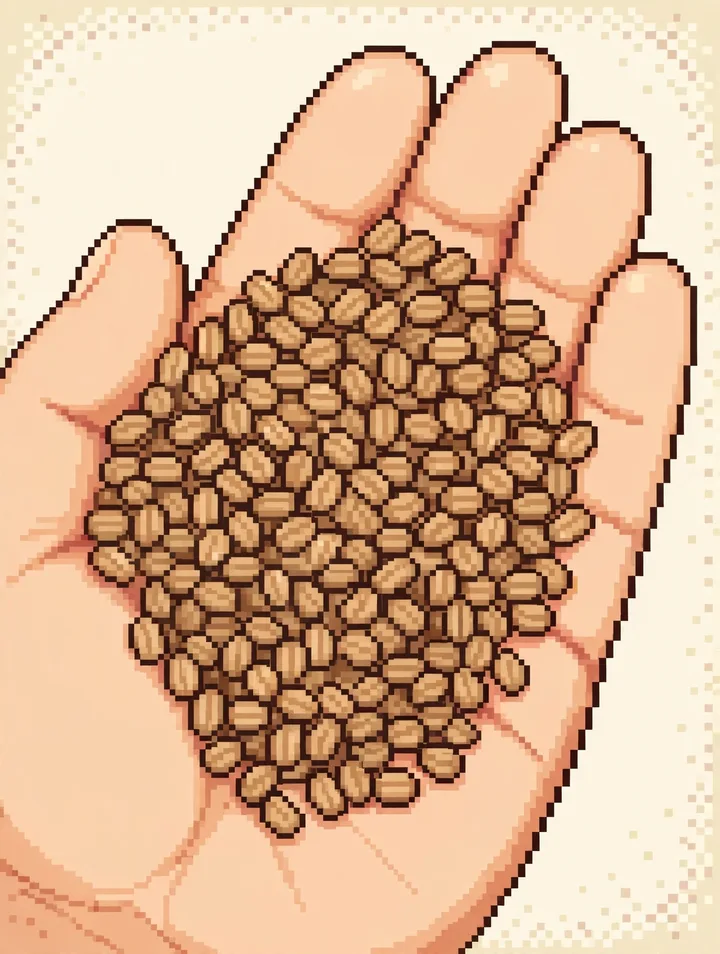
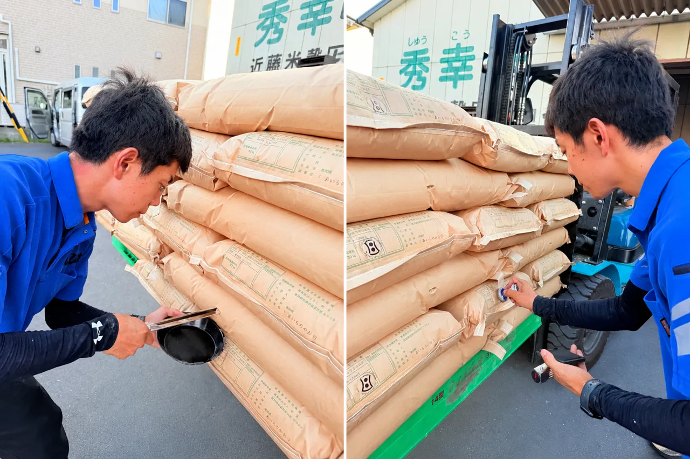

🌾 こめの けんさ



ふくろを タップ

平均


みわけ 0% 0 / 10
測定日付：—
測定粒種：うるち玄米
ロット番号：01
1等 整粒70↑ 死米7↓ 着色0.1↓ もみ0.3↓
2等 整粒60↑ 死米10↓ 着色0.3↓ もみ0.5↓
3等 整粒45↑ 死米20↓ 着色0.7↓ もみ1.0↓
💧 — 👀 0 / 10
🖐 0
📖 資料（規格表）
| 項目 | 1等 | 2等 | 3等 |
|---|---|---|---|
| 整粒（以上） | 70% | 60% | 45% |
| 水分（以下） | 15.0% | 15.0% | 15.0% |
| 計（以下） | 15% | 20% | 30% |
| 死米（以下） | 7% | 10% | 20% |
| 着色粒（以下） | 0.1% | 0.3% | 0.7% |
| もみ（以下） | 0.3% | 0.5% | 1.0% |
| 麦（以下） | 0.1% | 0.3% | 0.7% |
| もみ・麦以外（以下） | 0.3% | 0.5% | 1.0% |
| 異物（以下） | 0.2% | 0.4% | 0.6% |

試料の抜き方（標準抽出方法・平成13年農林水産省告示第443号）
| 荷口（袋の数） | 抜く袋 |
|---|---|
| 2〜15 | 全部 |
| 16〜25 | 13 |
| 26〜50 | 15 |
| 51〜100 | 18 |
| 101〜200 | 20 |
| 201〜1,000 | 32 |
| 1,001〜3,000 | 50 |
| 3,001〜10,000 | 80 |
| 10,001〜35,000 | 125 |
| 35,001以上 | 200 |
1袋から穀刺しで約40gを抜きます（十分に取れる場合は約20gでも可）。試料は合計1kgが目安で、足りない場合は1袋の量を増やします。抜く袋は無作為に選びます。
水分は規程の表値です。附則で、醸造用を除く玄米は当分の間この値に1.0%を加えた16.0%が最高限度とされています。ゲームのお米は、どちらの読みでも結論が変わらない水分（14%台前半か16.5%以上）だけにしています。3等の規格にも満たないものは規格外です。形質（見た目のよさ）は、本物の検査では各等級の標準品と見比べて判定します。
農産物検査の仕事が題材です。試料の採取は穀刺しで1袋 約40g（標準抽出方法・平成13年農林水産省告示第443号）。「さす」の場面に載せた穀刺しの写真は、実際の検査で使う実物です。水分は3回の測定の平均で判定します。粒の鑑定は同じ試料を白い皿と黒い皿の双方に入れて確認します。鑑定は視覚・触覚・臭覚・聴覚を用いて行います（鑑定方法・平成13年農林水産省告示第333号）。等級の規格は農産物規格規程（平成13年告示第244号）の水稲うるち玄米に基づきます。等級は、整粒・水分・被害粒・死米・着色粒・異種穀粒・異物の全項目がその等級の限度内にある、最も良い等級です（未熟粒は「計」に入りません）。判定した等級は等級証印として米袋に押印し、あわせて検査証明年月日の日付印を押します。死米と着色粒は、穀粒判別器でも鑑定できます。「みわける」と資料に載せた一等米の写真は実物です。検査結果は、穀粒判定器の印字ラベルの様式で、皿の50粒の実数（粒数とその割合）で表示します。場面の絵は、検査風景の写真をもとに描いたドット絵です（写真そのものは資料に置きました）。穀刺しのドット絵も実物の写真をもとに描いたもので、写真そのものと並べて置きました。一等米のドット絵も実物の写真をもとに描いたもので、写真そのものと並べて置きました。粒は、場面のドット絵に合わせて角ばった輪郭にしました。水分計や皿、袋などの道具まわりは、点の質感や小さな飾りを外して素のままにしました。検査員の顔は、はかる以降の各場面にも大きく添えました。最初の画面では、案内を鑑定皿の上に移し、皿は小さくして「かんてい皿」と名前を付けました。写真とドット絵のペアは、大きさをそろえ、穀刺しのドット絵は写真と同じ斜めの向きにしました。手が止まってしばらくすると、小さなカードが出てサイトへ戻れます。カードの「いいね」と「サイトへもどる」のタップ数は、遊んだ人数の目安として数えます。「さす」の穀刺しは、場面絵の検査員の手元に重ねて小さく動かし、色も場面絵に合わせた単色にしました。結果ラベルの下には、等級のめやす（重さ）を区切って併記しました（ラベルは粒数、めやすは重さで、取り違えないよう分けています）。資料の写真は、資料を開く時だけ読み込むようにして、最初の画面を軽くしました。場面の絵は最初に読み込み、「みわける」の見本はその場面で読み込むようにして、スタートを軽くしました。検査員の顔も、はかる以降の場面で読み込むようにして、スタートをさらに軽くしました。最初のタップでは穀刺しがすぐ見えるようにし、「さす」の間に次の場面の絵を先読みして、スタートの1分の待ちを減らしました。検査員の顔は、正面を向いた穏やかな表情のドット絵に作り直し、少し大きくして、最初の1分でも表情が読めるようにしました。最初のタップは、米袋の山全体で受けられるようにしました。はかるでは、次に数字が入る枠に金の内枠を付け、タップのたびに次の枠へ移し、ボタンにも残りの回数を出すようにして、最初の1分で3回の手応えが伝わるようにしました。みわけるでは、進み具合の大きな数字を皿の上に置き、よけるたびに数字が一度だけ静かに動くようにして、最初の1分でもタップの手応えがその場で伝わるようにしました。みわけるで、よい粒をタップした時も指を離した後まで小さな揺れが見えるようにして、最初の1分でどの粒も無反応にならないようにしました。さすでは、タップした瞬間に案内が「穀刺しで ぬいている」へ変わり、最初の1分でもタップが伝わったことがすぐ分かるようにしました。きかいでみるでは、押した直後から光の帯が見え、最初の粒がすぐ動き始めるようにして、最初の1分でもタップの反応がすぐ伝わるようにしました。等級を選ぶと、選んだボタンに静かに印が付き、案内もすぐ出るようにして、最初の1分でもタップの反応が伝わるようにしました。きめるでは、結果ラベルを薄く出る動きなしに開いた瞬間から読めるようにし、入った時にラベルの先頭が見える位置へ画面を移して、最初の1分でも考える手がかりがすぐ伝わるようにしました。おすでは、証印を押すたびに数の大きな数字が一度だけ静かに動き、最初の1分でも押した手応えがその場で伝わるようにしました。つぎの山では、場面の先頭が見える位置へ画面を移してから次の袋へ焦点を渡し、次の「さす」が場面全体が見える形ですぐ分かるようにしました。みわけるでは、入った時に皿の先頭が見える位置へ画面を移してから最初の粒へ焦点を渡し、白い皿と黒い皿の両方が一度に見えるようにして、最初の1分でもよける場所を探さなくて済むようにしました。みわけるでは、見本を少し小さくし、白い皿も余りの分だけ低くして、よけた粒の受け皿まで到着時の1画面に収まるようにしました。はかるが終わると、次へ進むボタンが画面の下端で見切れないよう、少し余白を残してボタン全体が見える位置へ画面を移すようにしました。きめるでは、入った時に段階の案内が見える位置へ画面を移し、案内と結果ラベルを先頭から読んでから等級を選ぶ優先順にしました。きめるで外れて皿へ戻る時も、入った時と同じく皿の先頭が見える位置へ画面を移し、顔と見本と両方の皿と受け皿が一度に見える形で見直せるようにしました。はかるでは、入った時に段階の案内が見える位置へ画面を移し、小さい画面でも案内と水分計が一度に見えるようにしました。みわけるでは、小さい画面（高さが低い画面）だけ顔と見本と皿を詰めて、黒い皿と受け皿まで到着時の1画面に収まるようにしました。きめるでは、小さい画面（高さが低い画面）だけ顔と結果ラベルを詰めて、結果ラベル全体が到着時の1画面に収まるようにしました。
出典: 農産物規格規程（平成13年農林水産省告示第244号）／農林水産省「コメの農産物検査」／成分検査の実施マニュアル（標準抽出方法の運用）